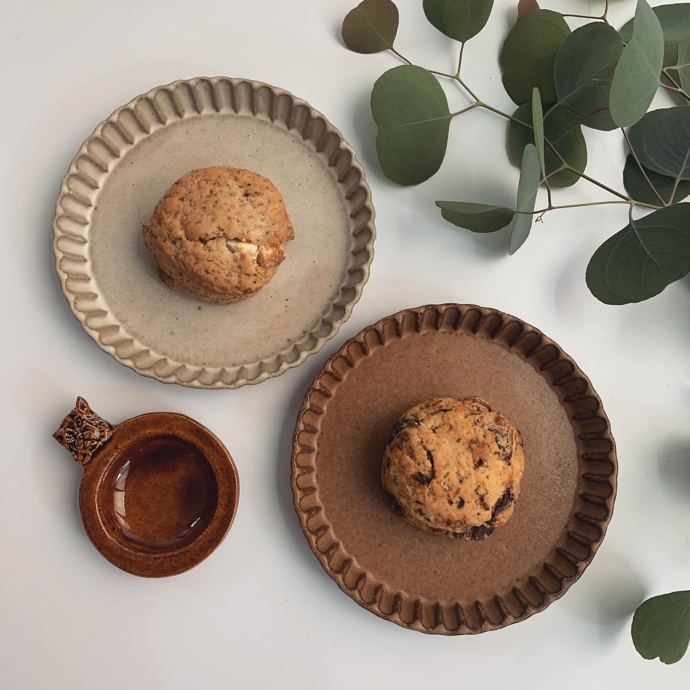
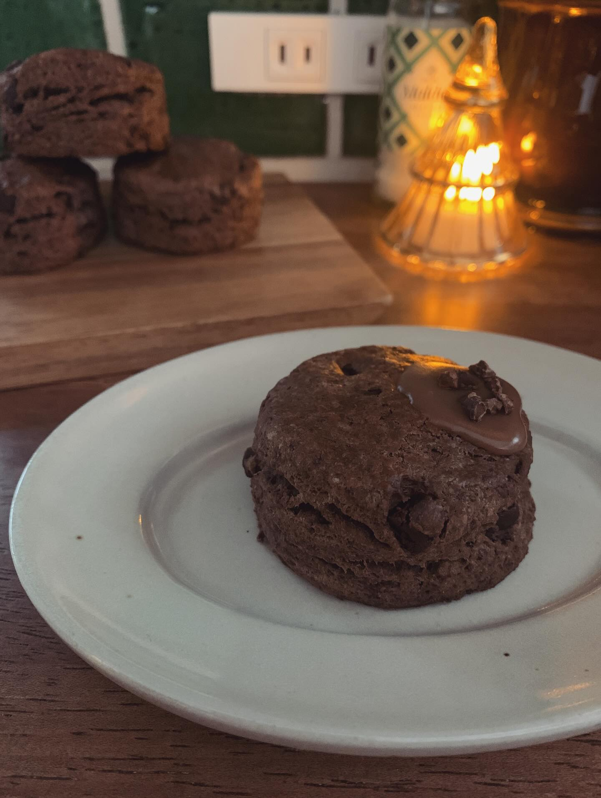

Our Story
伝統と愛情をひとつひとつに
過去、ロンドンでの生活経験があり、多くのスコーン屋を巡る機会を得ました。
日本でも腹割れのある伝統的な英国式スコーンと紅茶を楽しんでいただきたい思いで、お店をつくりました。
当店は栃木県佐野市という田舎町に位置しますが、佐野市にはさのまるを始め、佐野アウトレット、佐野厄除け大師、佐野らーめんといった魅力的なコンテンツもある場所です。
ぜひ、各所にお立ち寄りの際には、当店まで足を運んで頂けると嬉しいです。
英国直輸入の素材
クロテッドクリーム、チェダーチーズなど本場の味
毎朝焼きたて
注文を受けてから焼き上げる、できたての美味しさ
ひとつひとつ手作り
機械では出せない、手作りならではの食感